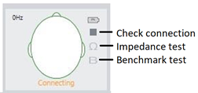
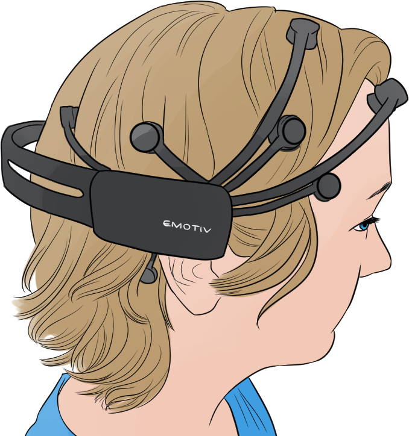

Study Setup
We try to run studies between 7 am and 2 pm so that fatigue is unlikely to be an issue.
If the study has not yet been created, hit the large yellow plus sign in the left column. To add a new participant, hit the smaller yellow plus sign in the right column.
While chatting is fun, try to keep it to a minimum to avoid affecting their mood.
Participants should avoid
- Caffeine before the study
- Sleep deprivation before the study
- Chewing gum during the study
Age and gender
Ask them about their age. Typical protocol is to guess their gender based on voice and appearance. If you are unsure, ask.
Gender diversity tip
Biological sex can be an uncomfortable topic for some LGBTQ people. If they say they're nonbinary, explain that the software only accepts binary genders. Ask them to pick whichever seems better, and offer to make a note of their actual gender in the comments. This can stop them from getting upset or uncomfortable, so they can be focused on the study.
Unlocking the license for the wearable eye tracker
On the small computer
- Go to Help > License and credits > Unlock license
- Hit yes
On the big computer
- Use both customer and license keys
- Installation name: ilux
Setting up the equipment
An experienced researcher takes 15-20 minutes to set up, including the 9 minutes for the tests.
Applying the B-Alert electrode headband
Preparing the headband
- Most guys wear M and most women wear S. Small women might need XS
- Put the stickers on tightly with the blue tags along the electrodes
- Fill the cream from 3 places, like a donut, with cream coming out on top
Putting on the main part
- Ask "Would you like me to wear gloves?"
- Ask them to remove their glasses (if applicable)
- Have them hold the tab as shown in the picture below
- Hold it upside down, then flip it back
- Position the band above the eyebrows and ears
- Stick each foam node to the bare scalp
- Velcro it together
Attaching the two nodes
- Ask the participant to wipe behind each ear with alcohol wipes
- Stick the metal stickers onto the 2 nodes
- Clip the back sensor to the computer and Velcro it to the big headset
- For the 2 nodes
- Remove the sticker coating
- Put a slight amount of cream onto the middle area
- Stick it behind the ear, avoiding catching hair on the sticker
On the computer
Perform the impedance test.
Applying the Epoc/Emotiv headset
Preparing
- Generously apply saline solution on all nodes (including rubber ones)
- Ask them to remove their glasses, if applicable
- When they put their glasses back on later, gently hold the Epoc in place
- Put it on their head, front to back
- First adjust the node behind the ear
- Then adjust the nodes by the forehead and temples
Interfacing
- There are 2 flash drives
- ✔ Red flash drive — 1 sample every 10 seconds, costs $0
- ❌ White flash drive — 2 samples every second, costs $$$
- Plug the red flash drive into the computer
- Turn on the Emotiv headset
- Check that the flash drive shows 2 green lights
Applying Shimmer
Putting it on
- Ask them for their non-dominant hand
- Palm up
- Ask them to give you the peace sign
- Put the Shimmer on the index and middle fingers, with the gray things on the inside of the fingers (hidden if they make a fist)
- Ask them to flex their fingers (fist, release)
- If the wires are too intrusive, move them
Connecting
- Check the back of the device. Find the BT RADIO ID. It may be necessary to troubleshoot.
- On the computer, check "enable data collection."
- It should show at the bottom of the screen.
Applying the eye tracking glasses
- Plug it into the big box and check for the giant blue battery
- Turn it on; the on/off button is on the same side as the USB plugin
- Connect laptop to the Tobii WiFi
- Network: TG02B-080106012841
- Password: TobiiGlasses
- Preferences: either global settings or sensory settings
- Check eye tracking
- Tobii glasses 2
- Test connection
- If good, proceed
- The box usually is clipped on the pocket
- Have them hold the target dot at arm's length against the wall and look at it for calibration
- Glasses should stay off for calibration. After that, they can choose
- If calibration fails, try changing the angle to improve the lighting
Preparing to run the study
Position check
If they're sitting at a computer, check where their eyes are. Are they too high or too low?
- Try having them scoot forward or backward
- Adjust the seat and/or screen up or down if needed
- Encourage them to relax in the chair
Check the electrodes on the screen. Are they all green? If not, adjust.
Running benchmark tests
There are 3 3-minute benchmark tests to help the software understand where the person's brain is at.
Scores should be mostly good. If 1 is marginal, proceed. If 2 are marginal, then the participant wasn't engaged enough, and you need to re-run it.
Screen calibration
Have them follow the dot with their eyes. Afterwards, ask them to look at the cross. If the eye tracking dot is at the cross, you're set.
Running the study
Ask them to adjust their position if their eyes go out of bounds for too long. Try not to intrude too much.
Finishing up
Disconnecting B-Alert
- First disconnect the computer part
- Ask them to remove the sticky parts behind their ears
- Clean the skin behind the ears with a paper towel
- Remove the headset, dry with paper towel, and offer dry shampoo
- Use the metal tweezers to remove the stickers, holding down the B-Alert on either side
- Clean the headset with paper towel, then alcohol wipes; let dry
Check the data
- Your goal is an 85% minimum in each area
- Post-process at the end of the day or week (it takes a long time)